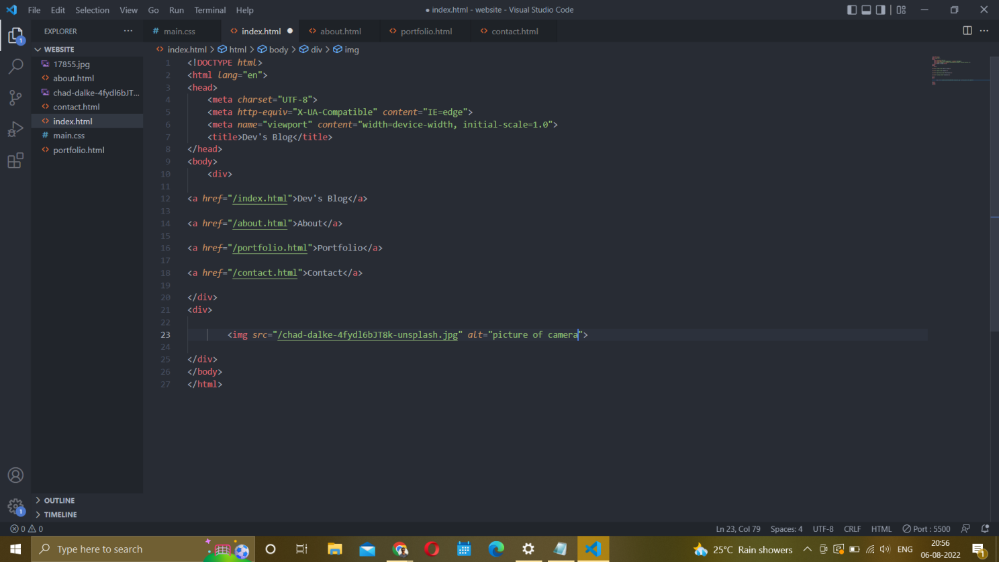

In the last article Navigation(link) in HTML we learned to add links to the website. In this article, we will learn to add images to an HTML website.
Points covered:
Image Tag
The image tag is used for providing images to HTML documents.
Attributes:-src is its attribute to provide the address of the image
alt the attribute is used for giving a description of the image. It helps in understanding what the image is
about when it fails to load.
If you have followed the steps from the last article you will find it easier to relate. fire up your VS Code. And copy the below code and paste it
<div>
<img src="" alt >
</div>
VS Code shortcut to add image
Remember that the image file needs to be located in the same folder to use VS Code shortcut to provide the address to src. Click in between " " marks in front of href and press the forward slash ( / ) button. And you will be able to see available image files, which you can add as a source. Select the image as per below. Click Save.
Go to the browser and you will be able to see the image.